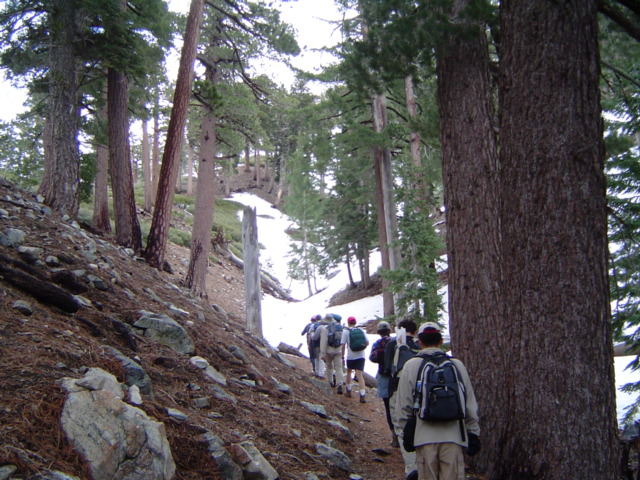

Caltech Memories -- I continued my hiking expeditions with the Y. Here, our group is hiking to Mt. Baldy in San Gabriel Mts. Apparently, I realized this was also the first time I'd seen/touched and felt snow... paradoxically in SoCal ~30 minutes drive from LA. (April-May 2004)
First |
Previous Picture |
Next Picture |
Last | Thumbnails
